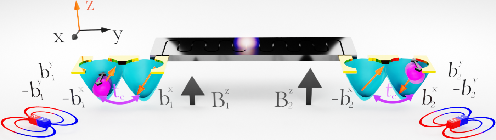
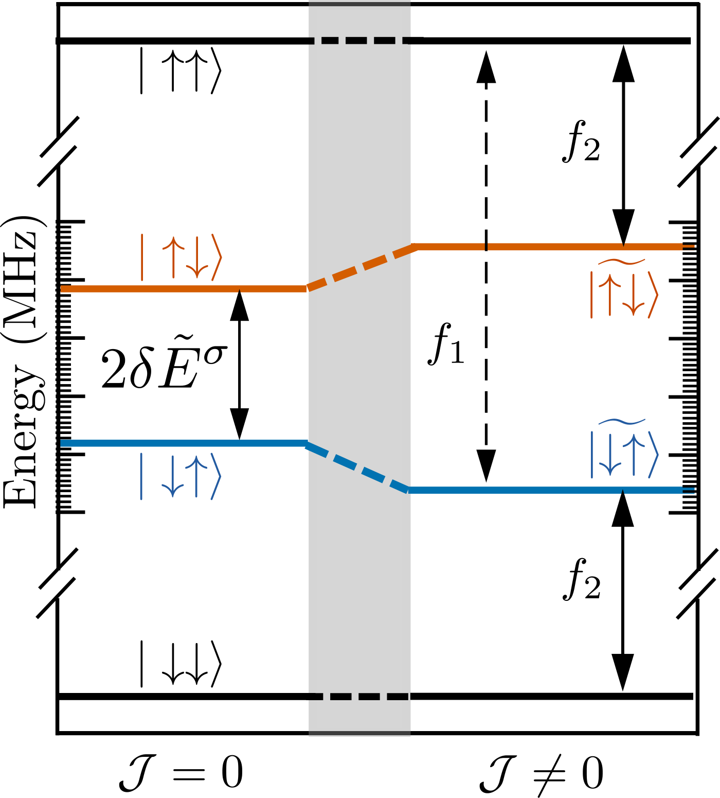
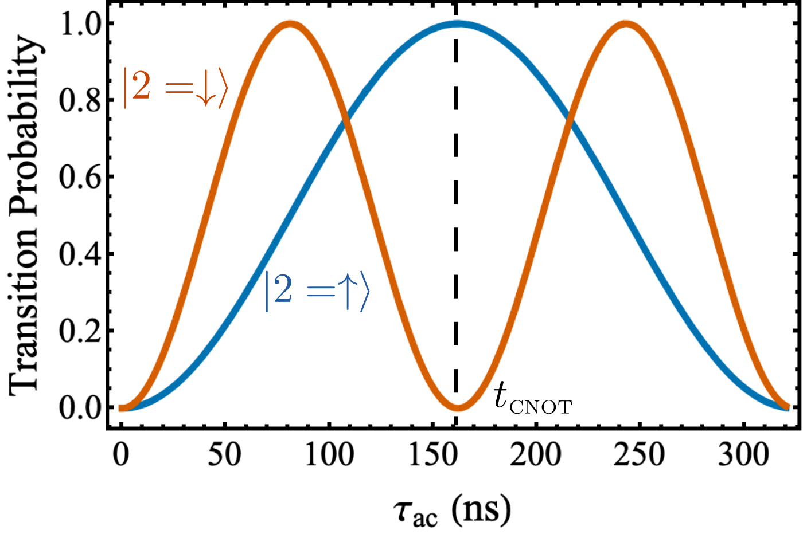
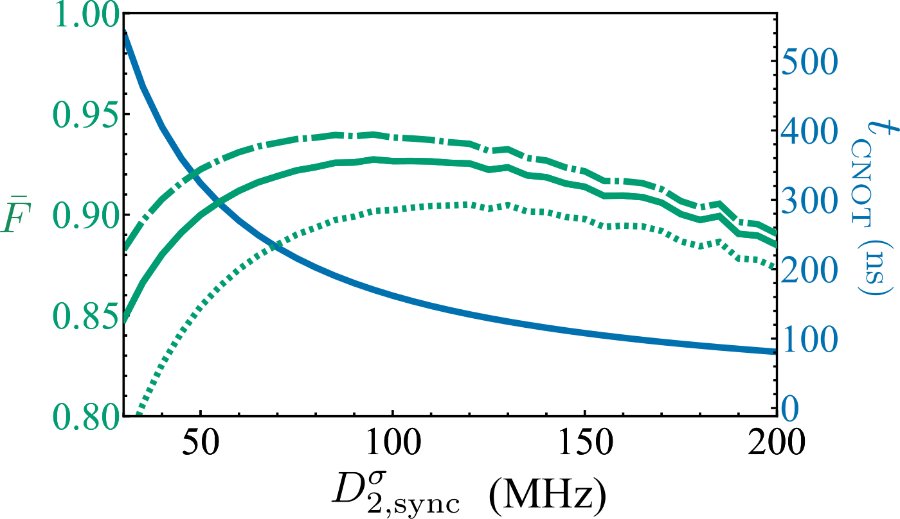

Published by the American Physical Society. This paper appeared in Physical Review B, and that published article is the version of record and the one to cite:
McMillan, S. R. & Burkard, G. (2023) Resonant direct CNOT in remote double quantum dot spin qubits. Physical Review B 108, 125414. doi:10.1103/PhysRevB.108.125414
The published article is © 2023 American Physical Society and nothing of it is reproduced here. This page is the authors' manuscript as submitted to arXiv on 27 July 2022 (v1, the only version), rendered from its LaTeX. It went through peer review afterwards and the title changed: the preprint was called Resonant single-shot CNOT in remote double quantum dot spin qubits. So the wording, and possibly the content, can differ from the published article. The preprint refers to no Supplemental Material.
Preprint: arXiv:2207.13588 (PDF), doi:10.48550/arXiv.2207.13588. Source beside this page: main.tex and its bibliography main.bbl.
Introduction. Electron spins in quantum dots (QD) have long been an attractive candidate for spin-based computation and information processing [1,2]. Spin initialization and readout has been demonstrated through spin-to-charge conversion [3,4], and remarkably long spin coherence times have been reached in Si based QDs as a result of isotopic purification [5]. Additionally, the use of local magnetic field gradients allows for all-electric spin manipulation [6,7]. These milestones have lead to the recent realization of fault tolerant single and two-qubit gates [8,9,10,11,12,13]. With an eye on building quantum networks [14] and simulations [15], these single qubit systems can be scaled by an order of magnitude through tunnel-coupled linear and two-dimensional arrays which demonstrate spin coherent charge displacement [16,17,18,19]. These dense qubit arrays provide registers for implementaion of surface code protocols, but interconnection of these registers will require some form of long-range coupling [20].
Achieving reliable long-range coupling in quantum systems is perhaps the most pressing obstacle to realizing the next generation of quantum technology. Extending beyond micron-scale intermediate coupling schemes [21,22] to macroscopic separations on the order of 1 mm requires coupling to an ancillary system [23,24], a so-called “quantum bus”. Photonic coupling of superconducting qubits by way of superconducting resonators was realized well over a decade ago [25] alongside proposals for coupling QD qubits with superconducting circuits [26,27,28]. The relatively weak magnetic dipole coupling rate between a single photon and electron is inherently too slow (10-500 Hz) to overcome dephasing or cavity loss, presenting a clear challenge to reaching the strong spin-photon coupling regime [29]. Theoretical proposals were aimed a alleviating this issue by coupling the spin to the photon indirectly through the electric dipole moment [30]. Spin-charge hybridization along with the use of micromagnetics to establish local field gradients lead to the realization of strong spin-photon coupling for single spins in Si-based double QDs (DQD) [31,32].
Cavity mediated spin-spin interactions have been realized in both the resonant [33] and dispersive [34] regimes. Universal two-qubit photon mediated gates are predicted to exist for DQD spin qubits [35,36], and driven two-qubit gates have been proposed for superconducting qubits, such as the so-called “cross-resonance gate” [37]. Despite these major advances, the possibilities for driving photon mediated entanglement of two spin qubits have been left unexplored.
In this letter, we propose a framework for realizing a single-shot resonant CNOT gate between two single-electron DQD qubits dispersively coupled to a common cavity mode. By tuning the spin-charge hybridization these spin qubits are predicted to outperform their charge qubit counterpart [35]. Here we show that driving both spins at a common frequency and asymmetric amplitudes allows for controlled two-qubit rotations. We expect synchronization of the drive strength to produce a high-fidelity CNOT gate in roughly half the time required for the cross-resonance scheme. These gate times rival those predicted for local operations on driven exchange-coupled spin qubits [38]. Given the sensitivity of QD spin qubits to local nuclei, gate fidelity should benefit from isotopically purified $^{28}$Si, where even in the presence of cavity loss and phonon emission fidelities larger than 90% should be possible.

Model. We consider two singly-charged DQDs capacitively coupled to a common mode of a superconducting microwave resonator (cavity), with frequency $\omega_c$. The energy detuning between the right (R) and left (L) dots, $\epsilon$, as well as the tunnel coupling, $t_c$, are electrically controlled, and the spin-photon interaction is facilitated by a local inhomogenous magnetic field $b^x$. We begin in the double-dot basis and consider a model Hamiltonian $\tilde{H} = \tilde{H}_0+\tilde{H}_d(t)+\tilde{H}_I$, with $\tilde{H}_0 = \sum_j ( t_c \tilde{\tau}^x_j +\epsilon_j\tilde{\tau}_z/2 + B^z_j \tilde{\sigma}^z_j/2 + b^x \tilde{\sigma}^x_j/2) + \omega_c a^\dagger a$. In this expression, $B^z_j$ is the external field, $a^\dagger$ $(a)$ is the photonic creation (annihilation) operator, $\tilde{\sigma}^k_j$ for $k=\{x, y, z\}$, are the spin Pauli matrices, and $\tilde{\tau}^k_j$ for $k=\{x, y, z\}$, are the spatial Pauli matrices satisfying the relation $\tau^z_j|L_j(R_j)\rangle=~(-1)|L_j(R_j)\rangle$. The driving Hamiltonian is written as $\tilde{H}_\text{d}(t) = \sum_j b^y_{j} \cos (\omega^d_j t + \phi) \tilde{\sigma}^y_{j}/2$, where $b^y_j$ is the driving strength, and the driving frequency, $\omega^d_j$, can be controlled electrically by shaking the spin in an inhomogeneous magnetic field - electrically driven spin resonance (EDSR) [6,7,39,40,32,31]. The charge couples to the cavity mode through a dipolar interaction with the Hamiltonian $\tilde{H}_\text{int} = \sum_j g^c (a^\dagger + a)\tilde{\tau}^z_j$. The electric dipole coupling strength $g_c$ is proportional to the dipole moment of the DQD, and is therefore electrically controllable through $\epsilon$. In what follows we maximize the dipole moment of the DQD by choosing the symmetric configuration where the charge is equally likely to be in the R or L dot ($\epsilon=0$).
The tunnel coupling $t_c$ hybridizes the double-dot states to form the symmetric and antisymmetric states $|\pm_j\rangle=(|L_j\rangle\pm|R_j\rangle)/\sqrt{2}$. These states hybridize with the spin due to the local gradient $b^x$. Recasting the Hamiltonian in the basis of $\tilde{H}_0$ leads to the transformed components,
where the driving strengths are $D^{\sigma}_j= b^y_j \cos\bar{\theta}_j$ and $D^{\tau}_j=b^{y}_j \sin\bar{\theta}_j$, and the cavity coupling strengths are $g^\sigma_j=g_c\sin\bar{\theta}_j$ and $g^\tau_j=g_c\cos\bar{\theta}_j$ for spin and charge respectively. These terms depend on the average hybridization angle $\bar{\theta}_j=(\theta^+_j+\theta^-_j)/2$, where $\theta^\pm_j=\arctan [b^x/(2t_c \pm B^z_j)] \in [0,\pi]$. In what follows we assume $2t_c \gt B^z_j \gg b^x$, such that in analogy to Ref. [35], the charge (spin) transition energies are given by $E^{\tau(\sigma)}_j = E_{2(1),j}-E_{0,j}$ where $E_{2(1),j} = \pm\sqrt{(2t_c-B^z_j)^2+(b^x)^ 2)}/2$ and $E_{0,j} =~{ -\sqrt{(2t_c+B^z_j)^2+(b^x)^2)}/2}$.
Dispersive coupling between the DQDs and the cavity mitigates losses due to interactions with real photons, limiting the spin-photon exchange to short-lived virtual transitions [34,41]. The dispersive regime requires the cavity frequency to be detuned from the spin transition energy by an amount $\Delta_j=E^\sigma_j-\omega_c$ such that $\Delta_j\gg\hbar g^\sigma_j$. In this regime the photonic states are weakly coupled, and we perform a Schrieffer-Wolff transformation to decouple the vacuum state from the populated photon states. Tuning the cavity frequency such that $g_j^\tau\Delta_j/|E_j^\tau-\omega_c|\ll g_j^\sigma\ll\Delta_j$ is most interesting for spin-qubit operation [35]. In the rotating wave approximation the dispersive Hamiltonian can be written as
where the Pauli matrices $\sigma^k_j$ and $\tau^k_j$ now correspond to the qubits dressed by the photonic excitations, and the cavity mediated spin-spin interaction coefficient is $\mathcal{J}=~g^\sigma_1 g^\sigma_2(\frac{1}{\Delta_1}+\frac{1}{\Delta_2})$. Due to the difference in external field between the two qubits, the dressed energy levels, $\tilde{E}^\sigma_j = \frac{1}{2}[E^\sigma_j + 2 (g^\sigma_j)^2\frac{E^\sigma_j}{(E^\sigma_j)^2-\omega_c^2}]$, have been written in terms of an average spin-flip energy $\tilde{E}^\sigma_\text{avg} = (\tilde{E}^\sigma_1 + \tilde{E}^\sigma_2)/2$ and a difference term $\delta \tilde{E}^\sigma ~=~ \tilde{E}^\sigma_1 - \tilde{E}^\sigma_2 $. Since the cavity is tuned closer to the spin transition energy, any non-local charge-charge and spin-charge transitions are highly off-resonant and therefore provide a negligible contribution to the dynamics. Additionally, by tuning the local driving to spin transitions the local charge transitions are negligible for the same reason, and the resulting Hamiltonian has no relevant dynamics in the charge channel.
We now assume that both spins are driven at the same frequency ($\omega^d_1=\omega^d_2=\omega^d$), but not necessarily the same strength. Next we assume the spin-spin interaction to be small relative to the spin-flip gradient, $\mathcal{J}\ll\delta\tilde{E}^\sigma$, and use the adiabatic basis, $\{ |\uparrow\uparrow\rangle,|\widetilde{\downarrow\uparrow}\rangle,|\widetilde{\uparrow\downarrow}\rangle,|\downarrow\downarrow\rangle\}$, where $\mathcal{H}$ is diagonalized with respect to the spin-spin interaction. In this basis the only off-diagonal contribution comes from the driving term, which can be written as
Figure 2 shows a sketch of the energy levels for states in the lowest charge sector. The effective gradient in the external field, $\delta \tilde{E}^\sigma$, lifts the degeneracy between the $m_s=0$ states. The presence of the non-local spin-spin coupling adds an additional symmetric frequency shift to the $m_s=0$ states in the adiabatic basis in contrast to asymmetric shift seen for homogeneous exchange coupling [38]. The symmetry of the system dictates that frequency $f_1$($f_2$) drives the spin at DQD1(2) unconditionally.

To eliminate the time dependence in Eq. (3), we work in a frame rotating at the drive frequency about the spin quantization axis. The rotating frame Hamiltonian has the form $\mathring{\mathcal{H}}=~i \dot{\hat{R}}(t)\hat{R}^\dagger(t) + \hat{R}(t)\hat{\mathcal{H}}(t)\hat{R}^\dagger(t)$, where $\hat{R}=~\exp[i \omega^d(\hat{\sigma}^z_1+\hat{\sigma}^z_2)t/2]$. The time-independent Hamiltonian can be expressed as
with $\lambda_\parallel=2 \tilde{E}^\sigma_\text{avg}-\omega^d$, $\lambda_\perp = \delta \tilde{E}^{\sigma}+\frac{\mathcal{J}^2}{2\delta \tilde{E}^{\sigma}}$, and the effective driving amplitudes
and
In what follows we rely on the hybridized driving amplitudes to generate single-shot remote entanglement.
Resonant non-local CNOT gate. One route to entangling two spins is to perform a gate with conditional rotations. For a CNOT gate we define the spin in DQD1 to be the target and the spin in DQD2 to be the control. Using the basis above, this operation is represented by the matrix
To model this operation we require the target spin to flip if the control is spin-up and an identity operation if the control is spin-down. To resonantly drive the spin at DQD1 we choose a driving frequency that is determined by the energy separation between $|\uparrow\uparrow\rangle$ and $|\widetilde{\downarrow\uparrow}\rangle$: $\omega^d-\delta\omega^d=\lambda_\parallel + \lambda_\perp$. On resonance, $\delta\omega^d=0$, the $\beta$ transitions couple states split in energy by the relatively large quantity $2 \delta \tilde{E}^{\sigma}$. As long as the off-resonant transitions are weakly coupled ($\beta_\pm \ll \delta\tilde{E}^\sigma$) the Hamiltonian expressed in Eq. (4) is effectively block diagonal, with both $\{|\uparrow\uparrow\rangle,|\widetilde{\downarrow\uparrow}\rangle\}$ and $\{|\widetilde{\uparrow\downarrow}\rangle,|\downarrow\downarrow\rangle\}$ blocks producing full Rabi oscillations at frequencies $\Omega_-=2|\alpha_-|$ and $\Omega_+=2|\alpha_+|$ respectively. The time required for maximum population transfer between the states $|\uparrow\uparrow\rangle\leftrightarrow|\downarrow\uparrow\rangle$ is $t_\text{CNOT}=(2m+1)\pi/\Omega_-$, for integer $m$.
Treating the resonant blocks individually we calculate the unitary operator for each. With the aim of obtaining the unitary in Eq. (7), the drive phase should be set such that the rotation is about the $\pm$x-axis: $\phi=(2\ell+1)\pi/2$, for integer $\ell$. Under this condition, the control spin-up block evolves as
and the block for control spin down evolves as
The dynamic phase is dependent on the energy of the corresponding block, $f_1 = \delta \tilde{E}^\sigma + \mathcal{J}^2/2\delta \tilde{E}^\sigma$ and $f_2 =- \delta \tilde{E}^\sigma - \mathcal{J}^2/2\delta \tilde{E}^\sigma$. The choice of phase allows one to write the total unitary ($U=U_{2=\downarrow}\oplus U_{2=\uparrow}$) in the form of the CNOT unitary shown in Eq. (7), up to local rotations about the z-axis. However, one could generate a conditional rotation about any arbitrary axis in the x-y plane by making the substitution $\sigma^x\to\sin\phi\;\sigma^x+\cos\phi\;\sigma^y$.
Under a symmetric drive ($b^y_1=b^y_2$) the difference in Rabi frequency between the upper and lower block differs only by the small quantity $\mathcal{J}/\delta\tilde{E}^\sigma$, leading to indiscriminate rotation of the target spin. In order to generate a single-shot conditional rotation of the target spin, the Rabi frequencies $\Omega_+$ and $\Omega_-$ should be out of phase. The necessary condition is then
with integer $n$. This can be done by adjusting the ratio of the ac driving strengths such that
where $m$ and $n$ obey Eq. (10). The unitary operator up to a global phase at time $t_\text{CNOT}$ is
The time dependent dynamic phase is $\Phi_\text{dyn}=\frac{f_2-f_1}{2}t_\text{CNOT}$ and the time-independent holonomic phase is $\Phi_\text{hol}=\frac{\pi}{2}[(2\ell+1)/2+m-n]$.

Figure 3 shows the synchronized Rabi oscillations for the driven CNOT gate. System parameters were chosen to represent realistic experimental conditions and are quoted in the figure caption. The analytic expressions derived above for the unitary evolution ignore the off-resonant transitions with coupling $\beta_\pm$ in Eq. (4). In general, strong driving will increase population transfer through the off-resonant channels impacting the coherent average gate fidelity $\bar{F}_c$. Numerical calculations of this fidelity show that for a modest synchronized drive strength of $D^\sigma_2=100$ MHz we predict gate times of $t_\text{CNOT}=162$ ns with coherent average fidelity $\bar{F}_c=0.99$. In principle, driving with this strength requires a field gradient with magnitude near 3.5 mT, a requirement well within the typical strength of contemporary micromagnetics ($\sim$1 mT/nm).
Discussion and summary. In addition to the parasitic effects of off-resonant channels, coupling to the environment also reduces the fidelity of the gate. Since the spin qubit couples to the cavity through a virtual charge qubit, the gate is vulnerable to both electron-phonon interaction as well as photonic loss through the cavity. However, since the charge qubit and photons are both virtual the influence on gate fidelity is less pronounced than for resonant coupling. To estimate these effects we calculate the average fidelity [42] in the presence of cavity loss, electron-phonon coupling, and general spin decoherence. The master equation in the dispersive basis then has the form
where $\mathcal{D}[\hat{o}]$ represents the Lindblad superoperator $\mathcal{D}[\hat{o}]\rho=2\hat{o}\rho \hat{o}^\dagger+\{\hat{o}^\dagger \hat{o},\rho\}$, and $\{...\}$ represents the anti-commutator. The density matrix $\hat{\rho}^\sigma$ corresponds to the two-spin subspace in the dispersive adiabatic basis, and we assume the environment to be at zero temperature. The fist term describes coherent evolution of the system, the second term describes loss through the cavity at rate $\kappa$, the third term accounts for the relaxation due to electron-phonon coupling at rate $\gamma_p$, and the last term expresses general dephasing of the spin at rate $\nu_{T^*_2}$.
An average measure of how well a trace-preserving quantum operation, $\mathcal{E}$, approximates a quantum gate, $U$, is defined as $\bar{F}(\mathcal{E},U)\equiv \int d\psi \langle\psi|U^\dagger\mathcal{E}(\psi)U|\psi\rangle$. Making use of the entanglement fidelity [43], $F_e$, the average fidelity in a four-dimensional Hilbert space can be written in a compact form [42]: $\bar{F}(\mathcal{E},U) = (\sum_j \text{Tr}[UU^\dagger_jU^\dagger\mathcal{E}(U_j)]+16)/80$. Here we introduce a basis of unitary operators, $U_j = X^k Z^l$, on the four-dimensional two-qubit subspace, where $X|j\rangle = |j\oplus 1\rangle$ and $Z|j\rangle = e^{2\pi i j /4}|j\rangle$ are defined on computational basis states $|0\rangle,...,|3\rangle$. Here the operation $\oplus$ represents addition modulo 4.
The average fidelity and gate time are plotted in Fig. 4 as a function of the synchronized drive strength $D^\sigma_{2,\text{sync}}$ for three sets of realistic parameters. Strong driving leads to faster gate times (shown by the blue line), but the fidelity is limited by increased transitions through off-resonant channels. However, weaker driving requires the system to be highly coherent, and if the gate time is too long incoherent processes become significant and the fidelity again suffers. Competition between off-resonant evolution and dissipation results in an optimal drive strength that maximizes gate fidelity. The optimal synchronized drive strength for the set of parameters shown in Fig. (4) are within the range $D^\sigma_{2,\text{sync}}\approx 95-120$ MHz. The top-end parameters yield an average fidelity of $\bar{F}=0.94$, as shown by the green dot-dashed line. However, using rather conservative values [44,45] still yields an average fidelity above 90% ($\bar{F}=0.905$) as shown by the dotted green line.

With recently achieved electric dipole coupling strengths $g_c/2\pi\approx 190$ MHz using high impedance resonators [34], we predict gate fidelities well above 90% in the presence of cavity loss, phonon emission, and spin dephasing. Gate times around 150 ns are relatively fast compared to other non-local entanglement operations, such as the cross-resonance gate [37] which is typically 300-400 ns. Along with single-spin operations this work elucidates the potential for all electrical remote entanglement in solid-state DQD spin qubits, and enhances the prospects of these systems for quantum information processing.
// acknowledgments //
We would like to acknowledge J. Mielke for useful and valuable discussions.
// references //
- 1D. Loss and D. P. DiVincenzo, “Quantum computation with quantum dots,” Phys. Rev. A 57, 120 (1998).
- 2R. Hanson, L. P. Kouwenhoven, J. R. Petta, S. Tarucha, and L. M. K. Vandersypen, “Spins in few-electron quantum dots,” Rev. Mod. Phys. 79, 1217 (2007).
- 3K. Ono, D. G. Austing, Y. Tokura, and S. Tarucha, “Current rectification by Pauli exclusion in a weakly coupled double quantum dot system,” Science 297, 1313–1317 (2002).
- 4JM Elzerman, R Hanson, LH Willems Van Beveren, B Witkamp, LMK Vandersypen, and Leo P Kouwenhoven, “Single-shot read-out of an individual electron spin in a quantum dot,” Nature 430, 431–435 (2004).
- 5M. Veldhorst, J. C. C. Hwang, C. H. Yang, A. W. Leenstra, B. de Ronde, J. P. Dehollain, J. T. Muhonen, F. E. Hudson, K. M. Itoh, A. Morello, and A. S. Dzurak, “An addressable quantum dot qubit with fault-tolerant control-fidelity,” Nat. Nanotechnol. 9, 981–985 (2014).
- 6Y. Tokura, W. G. van der Wiel, T. Obata, and S. Tarucha, “Coherent single electron spin control in a slanting Zeeman field,” Phys. Rev. Lett. 96, 047202 (2006).
- 7M. Pioro-Ladriere, T. Obata, Y. Tokura, Y.-S. Shin, T. Kubo, K. Yoshida, T. Taniyama, and S. Tarucha, “Electrically driven single-electron spin resonance in a slanting Zeeman field,” Nat. Phys. 4, 776–779 (2008).
- 8K. Takeda, J. Kamioka, T. Otsuka, J. Yoneda, T. Nakajima, M. R. Delbecq, S. Amaha, G. Allison, T. Kodera, S. Oda, and S. Tarucha, “A fault-tolerant addressable spin qubit in a natural silicon quantum dot,” Sci. Adv. 2, e1600694 (2016).
- 9J. Yoneda, K. Takeda, T. Otsuka, T. Nakajima, M. R. Delbecq, G. Allison, T. Honda, T. Kodera, S. Oda, Y. Hoshi, N. Usami, K. M. Itoh, and S. Tarucha, “A quantum-dot spin qubit with coherence limited by charge noise and fidelity higher than 99.9%,” Nat. Nanotechnol. 13, 102–106 (2018).
- 10A. R. Mills, C. R. Guinn, M. M. Feldman, A. J. Sigillito, M. J. Gullans, M. Rakher, J. Kerckhoff, C. A. C. Jackson, and J. R. Petta, “High fidelity state preparation, quantum control, and readout of an isotopically enriched silicon spin qubit,” arXiv (2022a), 10.48550/arXiv.2204.09551.
- 11X. Xue, M. Russ, N. Samkharadze, B. Undseth, A. Sammak, G. Scappucci, and L. M. K. Vandersypen, “Quantum logic with spin qubits crossing the surface code threshold,” Nature 601, 343–347 (2022).
- 12A. Noiri, K. Takeda, T. Nakajima, T. Kobayashi, A. Sammak, G. Scappucci, and S. Tarucha, “Fast universal quantum gate above the fault-tolerance threshold in silicon,” Nature 601, 338–342 (2022).
- 13A. R. Mills, C. R. Guinn, M. J. Gullans, A. J. Sigillito, M. M. Feldman, E. Nielsen, and J. R. Petta, “Two-qubit silicon quantum processor with operation fidelity exceeding 99%,” Sci. Adv. 8, eabn5130 (2022b).
- 14A. G. Fowler, M. Mariantoni, J. M. Martinis, and A. N. Cleland, “Surface codes: Towards practical large-scale quantum computation,” Phys. Rev. A 86, 032324 (2012).
- 15T. Byrnes, N. Y. Kim, K. Kusudo, and Y. Yamamoto, “Quantum simulation of Fermi-Hubbard models in semiconductor quantum-dot arrays,” Phys. Rev. B 78, 075320 (2008).
- 16T. Fujita, T. A. Baart, C. Reichl, W. Wegscheider, and L. M. K. Vandersypen, “Coherent shuttle of electron-spin states,” NPJ Quantum Inf. 3, 22 (2017).
- 17H. Flentje, P.-A. Mortemousque, R. Thalineau, A. Ludwig, A. D. Wieck, C. Bäuerle, and T. Meunier, “Coherent long-distance displacement of individual electron spins,” Nat. Commun. 8, 501 (2017).
- 18U. Mukhopadhyay, J. P. Dehollain, C. Reichl, W. Wegscheider, and L. M. K. Vandersypen, “A 2$\times$ 2 quantum dot array with controllable inter-dot tunnel couplings,” Appl. Phys. Lett. 112, 183505 (2018).
- 19P.-A. Mortemousque, E. Chanrion, B. Jadot, H. Flentje, A. Ludwig, A. D. Wieck, M. Urdampilleta, C. Bäuerle, and T. Meunier, “Coherent control of individual electron spins in a two-dimensional quantum dot array,” Nat. Nanotechnol. 16, 296–301 (2020).
- 20L. M. K. Vandersypen, H. Bluhm, J. S. Clarke, A. S. Dzurak, R. Ishihara, A. Morello, D. J. Reilly, L. R. Schreiber, and M. Veldhorst, “Interfacing spin qubits in quantum dots and donors—hot, dense, and coherent,” NPJ Quantum Inf. 3, 34 (2017).
- 21F. Hassler, G. Catelani, and H. Bluhm, “Exchange interaction of two spin qubits mediated by a superconductor,” Phys. Rev. B 92, 235401 (2015).
- 22G. Tosi, F. A. Mohiyaddin, V. Schmitt, S. Tenberg, R. Rahman, G. Klimeck, and A. Morello, “Silicon quantum processor with robust long-distance qubit couplings,” Nat. Commun. 8, 450 (2017).
- 23H. J. Kimble, “The quantum internet,” Nature 453, 1023–1030 (2008).
- 24M. J. A. Schuetz, E. M. Kessler, G. Giedke, L. M. K. Vandersypen, M. D. Lukin, and J. I. Cirac, “Universal quantum transducers based on surface acoustic waves,” Phys. Rev. X 5, 031031 (2015).
- 25J. Majer, J. M. Chow, J. M. Gambetta, J. Koch, B. R. Johnson, J. A. Schreier, L. Frunzio, D. I. Schuster, A. A. Houck, A. Wallraff, A. Blais, M. H. Devoret, S. M. Girvin, and R. J. Schoelkopf, “Coupling superconducting qubits via a cavity bus,” Nature 449, 443–447 (2007).
- 26L. Childress, A. S. Sørensen, and M. D. Lukin, “Mesoscopic cavity quantum electrodynamics with quantum dots,” Phys. Rev. A 69, 042302 (2004).
- 27G. Burkard and A. Imamoglu, “Ultra-long-distance interaction between spin qubits,” Phys. Rev. B 74, 041307 (2006).
- 28V. Srinivasa, J. M. Taylor, and C. Tahan, “Entangling distant resonant exchange qubits via circuit quantum electrodynamics,” Phys. Rev. B 94, 205421 (2016).
- 29G. Burkard, M. J. Gullans, X. Mi, and J. R. Petta, “Superconductor–semiconductor hybrid-circuit quantum electrodynamics,” Nat. Rev. Phys. 2, 129–140 (2020).
- 30A. Cottet and T. Kontos, “Spin quantum bit with ferromagnetic contacts for circuit QED,” Phys. Rev. Lett. 105, 160502 (2010).
- 31N. Samkharadze, G. Zheng, N. Kalhor, D. Brousse, A. Sammak, U. C. Mendes, A. Blais, G. Scappucci, and L. M. K. Vandersypen, “Strong spin-photon coupling in silicon,” Science 359, 1123–1127 (2018).
- 32X. Mi, M. Benito, S. Putz, D. M. Zajac, J. M. Taylor, G. Burkard, and J. R. Petta, “A coherent spin–photon interface in silicon,” Nature 555, 599–603 (2018).
- 33F. Borjans, X. G. Croot, X. Mi, M. J. Gullans, and J. R. Petta, “Resonant microwave-mediated interactions between distant electron spins,” Nature 577, 195–198 (2020).
- 34P. Harvey-Collard, J. Dijkema, G. Zheng, A. Sammak, G. Scappucci, and L. M. K. Vandersypen, “Coherent spin-spin coupling mediated by virtual microwave photons,” Phys. Rev. X 12, 021026 (2022).
- 35M. Benito, J. R. Petta, and G. Burkard, “Optimized cavity-mediated dispersive two-qubit gates between spin qubits,” Phys. Rev. B 100, 081412 (2019).
- 36A. Warren, E. Barnes, and S. E. Economou, “Long-distance entangling gates between quantum dot spins mediated by a superconducting resonator,” Phys. Rev. B 100, 161303 (2019).
- 37C. Rigetti and M. Devoret, “Fully microwave-tunable universal gates in superconducting qubits with linear couplings and fixed transition frequencies,” Phys. Rev. B 81, 134507 (2010).
- 38M. Russ, D. M. Zajac, A. J. Sigillito, F. Borjans, J. M. Taylor, J. R. Petta, and G. Burkard, “High-fidelity quantum gates in Si/SiGe double quantum dots,” Phys. Rev. B 97, 085421 (2018).
- 39E. Kawakami, P. Scarlino, D. R. Ward, F. R. Braakman, D. E. Savage, M. G. Lagally, M. Friesen, S. N. Coppersmith, M. A. Eriksson, and L. M. K. Vandersypen, “Electrical control of a long-lived spin qubit in a Si/SiGe quantum dot,” Nat. Nanotechnol. 9, 666–670 (2014).
- 40D. M. Zajac, A. J. Sigillito, M. Russ, F. Borjans, J. M. Taylor, G. Burkard, and J. R. Petta, “Resonantly driven CNOT gate for electron spins,” Science 359, 439–442 (2018).
- 41T. Bonsen, P. Harvey-Collard, M. Russ, J. Dijkema, A. Sammak, G. Scappucci, and L. M. K. Vandersypen, “Probing the Jaynes-Cummings ladder with spin circuit quantum electrodynamics,” arXiv (2022), 10.48550/arXiv.2203.05668.
- 42M. A. Nielsen, “A simple formula for the average gate fidelity of a quantum dynamical operation,” Phys. Lett., A 303, 249–252 (2002).
- 43B. Schumacher, “Sending entanglement through noisy quantum channels,” Phys. Rev. A 54, 2614 (1996).
- 44A. J. Sigillito, M. J. Gullans, L. F. Edge, M. Borselli, and J. R. Petta, “Coherent transfer of quantum information in a silicon double quantum dot using resonant swap gates,” NPJ Quantum Inf. 5, 110 (2019).
- 45P. Stano and D. Loss, “Review of performance metrics of spin qubits in gated semiconducting nanostructures,” arXiv (2021), 10.48550/arXiv.2107.06485.